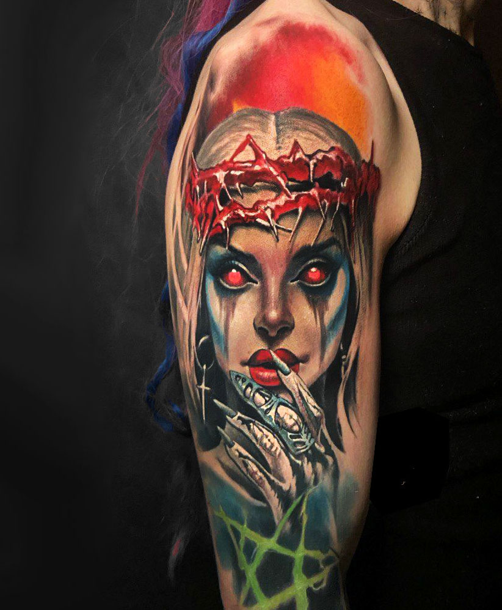
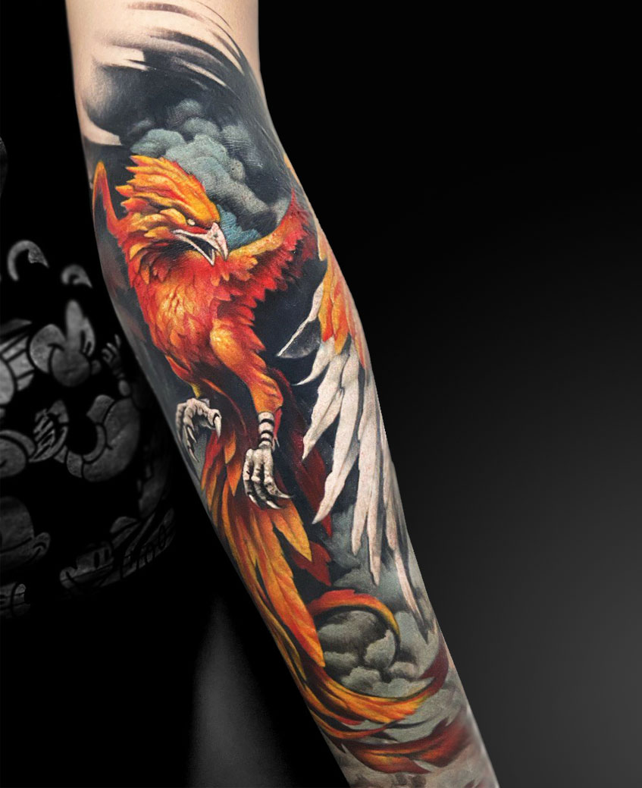
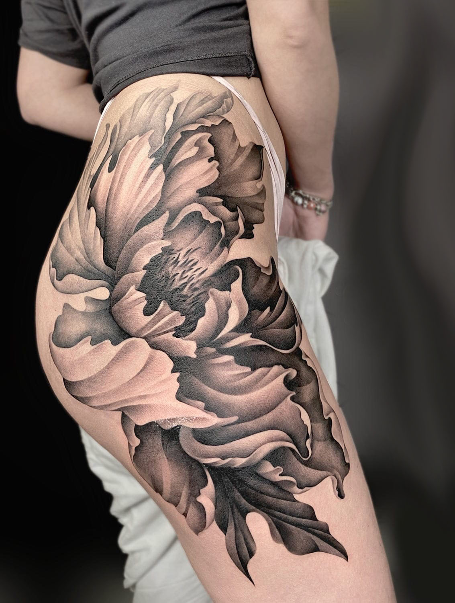
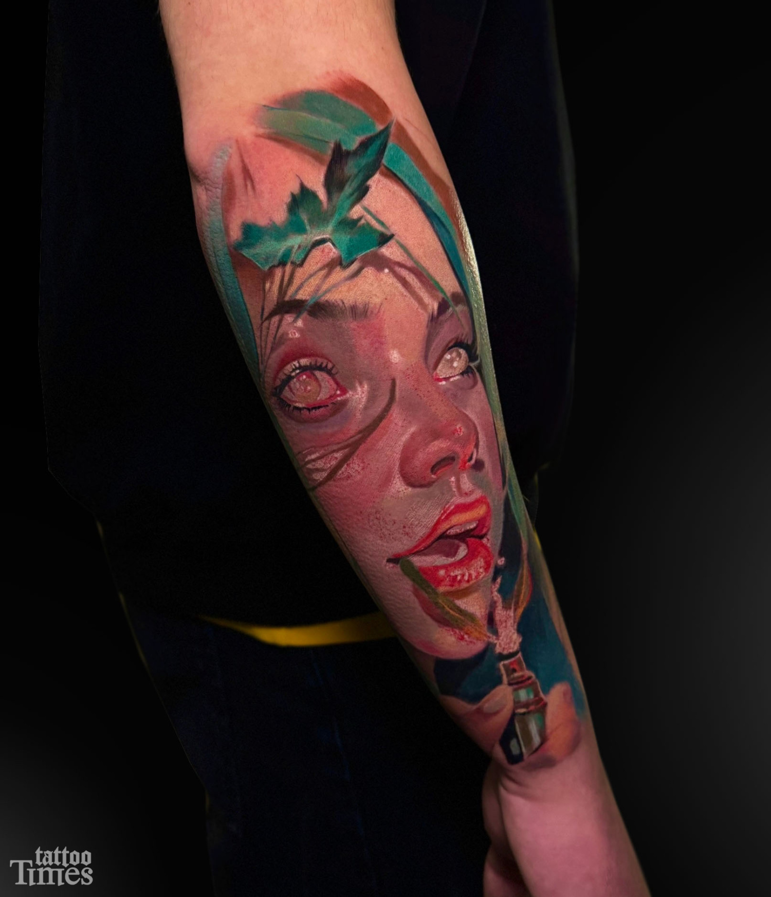
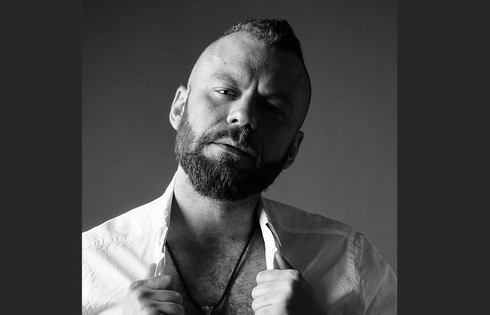
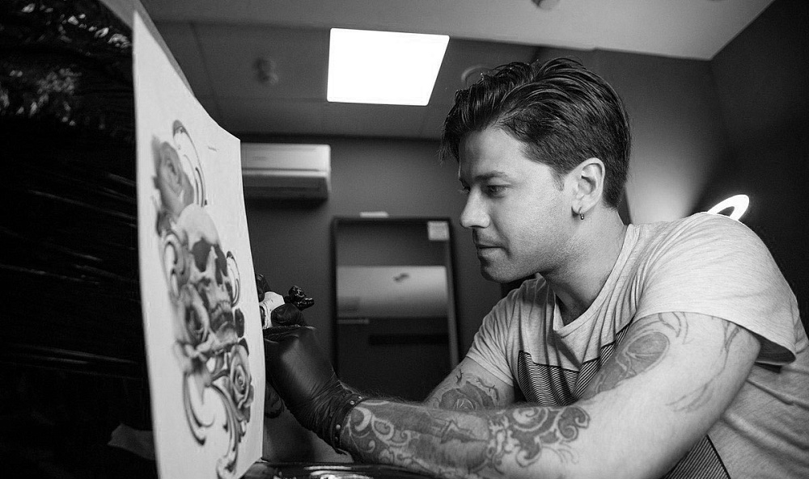
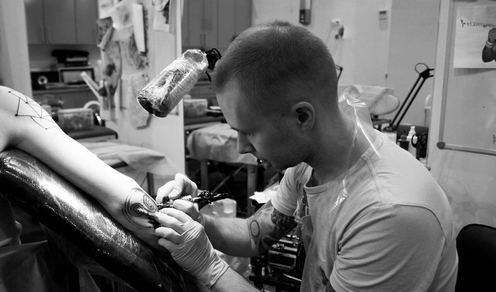
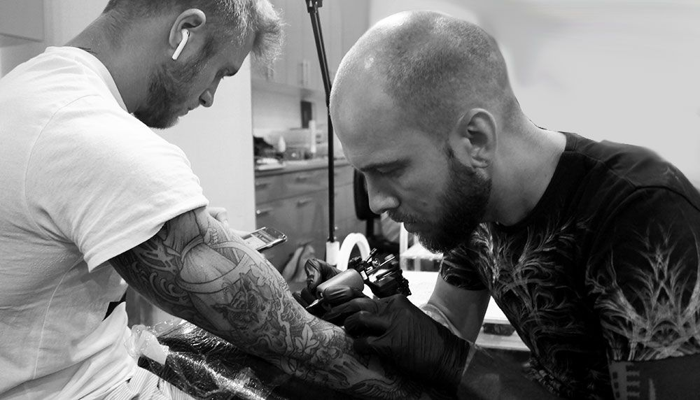
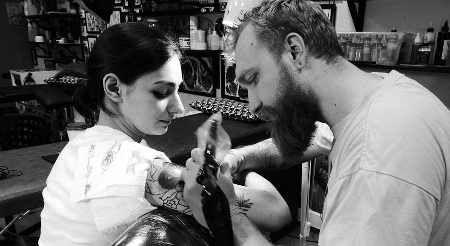
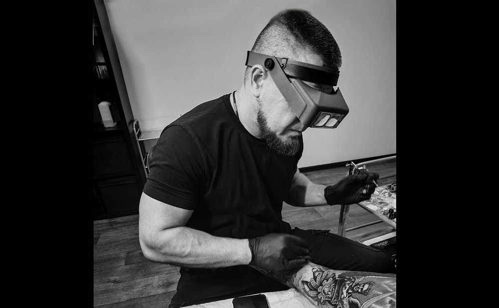

Тату Таймс
Легендарный тату-салон Москвы, занимающий первое место в рейтингах с 2019 года. Мастера с художественным образованием и опытом от 20 лет создают уникальные авторские работы.

О салоне
Тату Таймс — один из самых уважаемых и старейших тату-салонов Москвы, который по праву занимает первое место в рейтинге столичных студий. Салон работает уже более 20 лет и за это время обслужил более 10 000 довольных клиентов.
Главное преимущество Тату Таймс — команда профессионалов. Все мастера салона имеют высшее художественное образование и опыт работы от 15 лет. Среди них — выпускники МГХПА им. Строганова, а также мастера с международным опытом работы. Каждый эскиз разрабатывается индивидуально с учётом характера и пожеланий клиента.
Салон расположен в деловом центре столицы и отличается особой атмосферой уюта и профессионализма. Здесь строго соблюдаются все санитарные нормы: используются только одноразовые инструменты, а все сотрудники имеют медицинское образование. Тату Таймс — это место, где ваша идея превращается в настоящее произведение искусства.
Студия предлагает бесплатный индивидуальный эскиз, а мастера работают во всех популярных стилях: реализм, графика, дотворк, блекворк, акварель, минимализм и другие. Отдельного внимания заслуживает услуга профессионального перекрытия старых некачественных татуировок и маскировки шрамов.
Реальное портфолио



Мастера Тату Таймс






Стили и услуги
Стили работ
Услуги
- Художественная татуировка
- Перекрытие старых тату
- Маскировка шрамов
- Пирсинг
- Бесплатный эскиз
- Обучение тату
Отзывы клиентов
"Спасибо мастеру! Быстро и качественно, сервис 10 из 10! Дружный коллектив :)"
"Моя первая тату — большая по размеру. Мастер Артём был очень терпелив и сделал первый опыт позитивным! Спасибо студии Tattoo Times!"
"Никита — настоящий мастер своего дела, работа выполнена превосходно! Очень качественно, нет слов! Обязательно буду рекомендовать всем!"